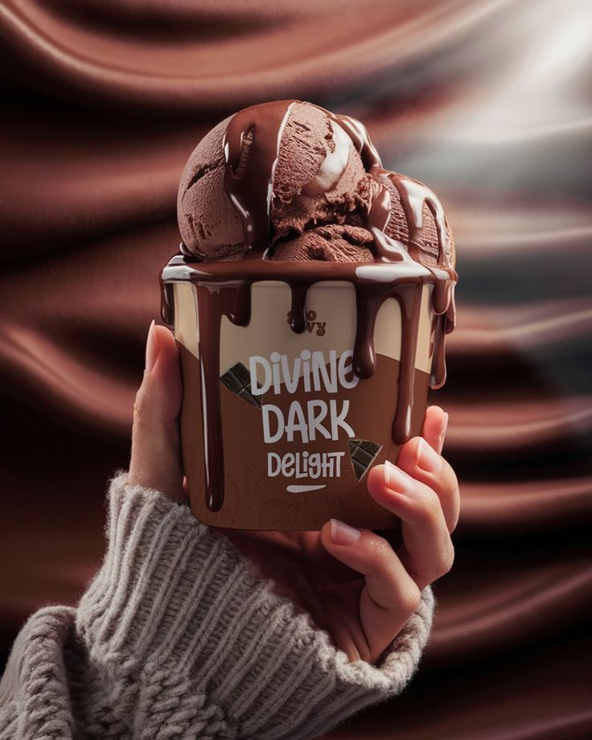
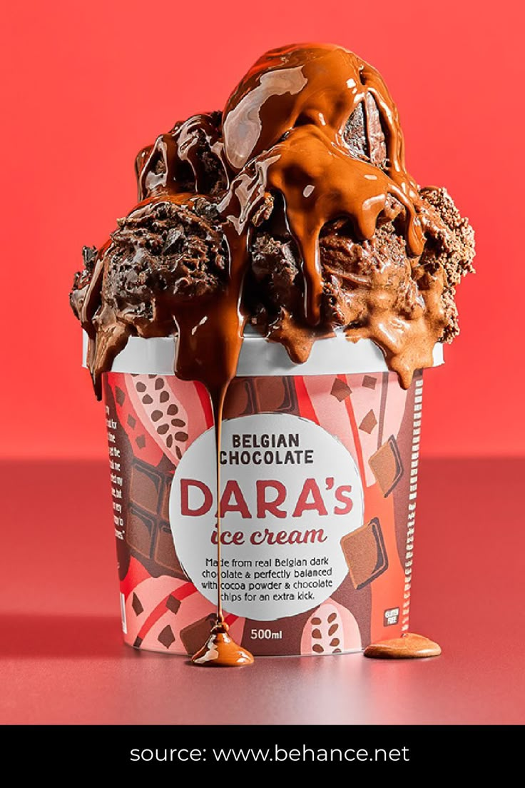
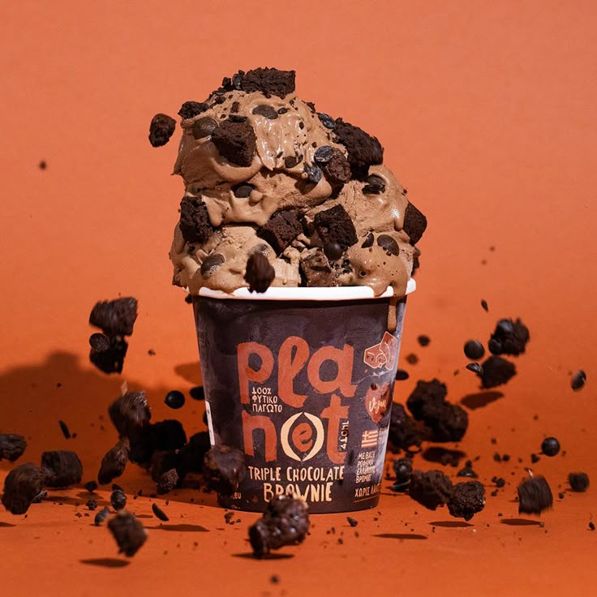

Chocolate ice cream is ice cream with natural or artificial chocolate flavoring. One of the oldest flavors of ice cre ams, it is also one of the world's most popular. While mo st often sold alone, it is also a base for many other flavors.
The earliest frozen chocolate recipes were published in Naples, Italy, in 1693 in Antonio Latini's The Modern Ste ward. Chocolate was one of the first ice cream flavors, c reated before vanilla, common drinks such as hot chocolat e, coffee, and tea were the first food items to be turned into frozen desserts.[2] Hot chocolate had become a popu lar drink in seventeenth-century Europe, alongside coffe e and tea, and all three beverages were used to make fro zen and unfrozen desserts.[3] Latini produced two recipe s for ices based on the drink, both of which contained o nly chocolate and sugar.[4] In 1775, Italian doctor Fi lippo Baldini wrote a treatise entitled De sorbetti, in which he recommended chocolate ice cream as a remedy for various medical conditions, including gout and scurvy. Chocolate ice cream became popular in the United States in the late nineteenth century. The first advertisement for ice cream in America started in New York on May 12, 1777, when Philip Lenzi announced that ice cream was officially available "almost every day". Until 1800, ice cream was a rare and exotic dessert enjoyed mostly by the elite. Around 1800 insulated ice houses were invented and manufacturing ice cream soon became an industry in America.
Chocolate ice cream is used in the creation of other flavors, such as rocky road. Other flavors of ice cream contain chocolate chips mixed in with the ice cream. For example, (plain) chocolate chip ice cream is made with vanilla ice cream, chocolate chocolate chip (or double chocolate chip) ice cream is made with chocolate ice cream, and mint chocolate chip ice cream is made with mint ice cream.